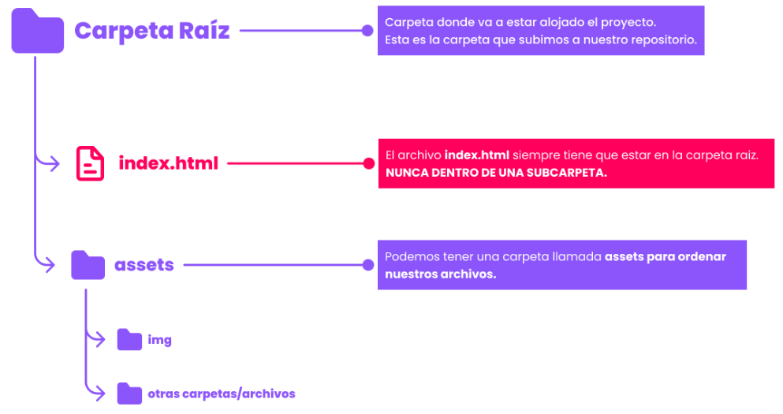

Introducción
Deployar un proyecto significa publicar o desplegar una aplicación o sitio web en un servidor o plataforma en línea para que esté disponible públicamente. Es decir, deployar es el proceso de tomar el código de tu proyecto y colocarlo en un servidor donde se ejecutará y estará disponible para el público.
El proceso de deployar un proyecto web incluye tareas como la configuración del servidor, la subida de archivos y la configuración de la base de datos. La forma en que se deploya un proyecto web depende de la tecnología y plataforma utilizadas, pero en general es un proceso que requiere un conocimiento técnico y un proceso detallado.
Por suerte, para personas que recién se están iniciando en este mundo, existen plataformas como Vercel que facilitan ese proceso.
¿Qué es Vercel?
Vercel es una plataforma de desarrollo web y hospedaje que permite a los desarrolladores crear y desplegar fácilmente aplicaciones web y sitios estáticos. Ofrece una variedad de herramientas y recursos para ayudar a los desarrolladores a optimizar su flujo de trabajo y mejorar la velocidad y la experiencia de carga de sus aplicaciones. Vercel es conocido por su integración con Git y su enfoque en el desarrollo de aplicaciones con tecnologías modernas, como React y Next.js. También ofrece opciones de hospedaje de alto rendimiento y escalabilidad para proyectos de cualquier tamaño.
Error 404 en Vercel
Un error común con el que nos podemos encontrar al tratar de deployar nuestra primera página en Vercel es el error 404. Este error implica que el servidor no pudo encontrar la página que estás buscando. Normalmente, este problema se debe a un problema con el archivo index.html.
Este archivo es el archivo principal que se carga cuando un usuario accede a la raíz de tu sitio web en Vercel. Si el archivo index.html no existe o está mal configurado, puede causar un error 404. Para solucionar esto, debemos asegurarnos de dos cosas:
-
Tiene que existir si o si un archivo index.html en nuestro proyecto. Vercel lo tomará como punto de entrada a la aplicación y por lo tanto será la primera página que intentará renderizar. Por ejemplo, si estuviéramos haciendo una página institucional con varias sub-páginas (y en consecuencia, varios archivos html), debemos asegurarnos que la landing page (página principal) se realice en el archivo index.html. En caso de no existir este archivo, Vercel nos arroja el error.
-
El archivo index.html debe estar en la carpeta raíz de nuestro proyecto. No debemos colocarlo dentro de subcarpetas que están en nuestro proyecto, debemos ponerlo en el nivel principal, conocido como la raíz del proyecto
